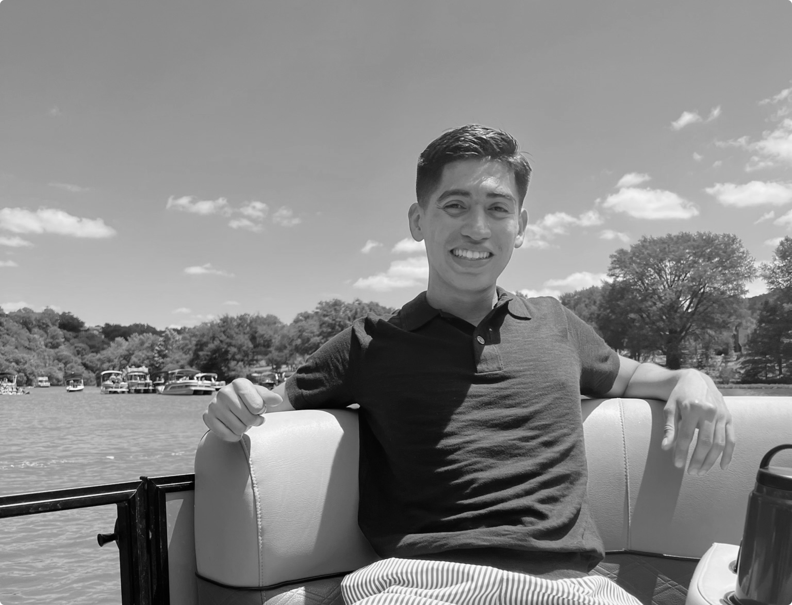

“i am passionate about serving people by solving for their needs and understanding the gravity of those decisions as they impact the world”
Hello, I am a student at Cornell University studying Information Science with a concentration in User Experience. In the past, I have interned at Amazon, JPMorgan Chase, and omviser as a UX Designer.
My passion for design nurtured at a young age. Growing up, I was interested in drawing, painting, and graphc design. Naturally, graphic desing influence me to follow product design. Hence, I decided to take a course called Intro to Digital Product Design, where I fell in love with the entire process: from product thinking to user research to visual design. Since I’ve had opportunities to design human-centered experiences for different digital interfaces and hope to continue growing as a designer.
When I'm not heads down with designs, you can find me dancing, binge-watching shows, creating new Spotify playlists, or eating out with family or friends.
